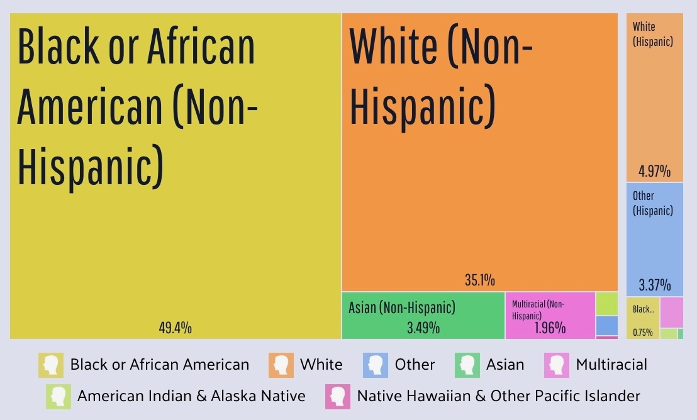
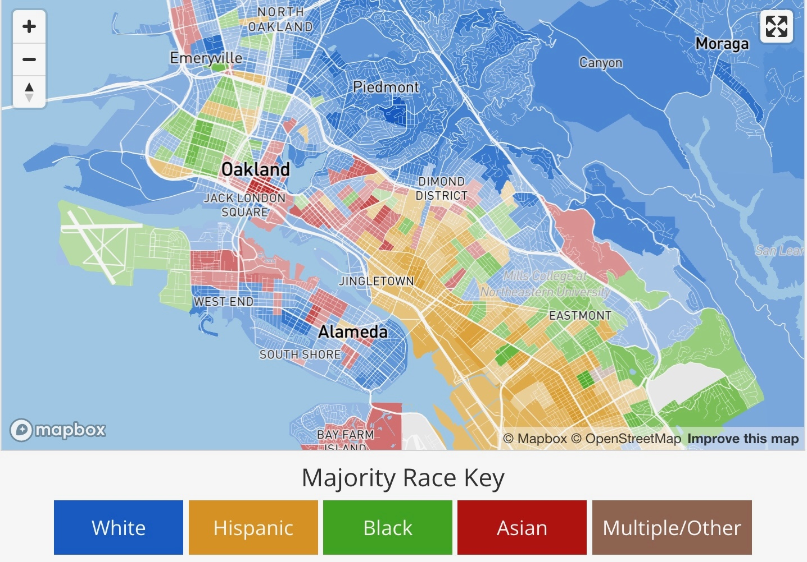

Week 13: Standpoint Epistemology, Data Feminism
DSAN 5450: Data Ethics and Policy
Spring 2025, Georgetown University
Wednesday, April 16, 2025
“Controlling for” Everything Besides Race

- Economist assertion: everything is “same” except for [name \(\leadsto\) race]
- Weird part of assertion: only true if the “everything” is stripped of context… But, stripped of context, how would we get [name \(\leadsto\) race] in the first place?
Age Discrimination?

Fair \(\iff\) [\(\Pr(\text{Admit Presley}_{12}) = \Pr(\text{Admit Presley}_{22})\)]?
- Root of issue: [BA Stats, UCLA, 3.7] has no “free-floating” meaning—it’s attached to a person \(\Rightarrow\) affected by/interpreted w.r.t. their “protected” characteristics
“Cool Theory, I Guess…”
- Less pessimistic result of pessimistic conjecture: Some hope from Fodor-Sperber model (disclaimer: also terrifying, Philip K. Dick Minority Report-style dystopian possibilities)
- “Good luck measuring ideas inside of people’s heads… I’ll be over here measuring real things and doing real data science!” -My innumerable Wile E. Coyote-style opps


“Cool Theory, I Guess…”
(Brace yourself: Jeff‚Äôs Trying-My-Best Fodor-Sperber model of socially-constructed ‚Äúrace‚Äù on next few slides‚Ķ I‚Äôm sorry in advance üôàüôàüôà Did you know you can italicize emojis)


Opening A Big Can Of Worms
- Social interactions among \(t^e_0\), \(t^e_1\), \(t^e_2\)…
- Mediated by external things \(o^e_3\) to \(o^e_8\) (giving rise to patterns of interaction)…

Opening A Big Can Of Worms
- Social interactions among \(t^e_0\), \(t^e_1\), \(t^e_2\)…
- Mediated by external things \(o^e_3\) to \(o^e_8\) (giving rise to patterns of interaction)…
- Each person \(x\) forming their own internal representations \(\widetilde{t^x_0}\), \(\widetilde{t^x_1}\), \(\widetilde{t^x_2}\) of one another based on patterns of interaction, then
- Generalizing to an internal representation of a “type of person” \(\widetilde{t^x_9}\)…

Opening A Big Can Of Worms
- Social interactions among \(t^e_0\), \(t^e_1\), \(t^e_2\)…
- Mediated by external things \(o^e_3\) to \(o^e_8\) (giving rise to patterns of interaction)…
- Each person \(x\) forming their own internal representations \(\widetilde{t^x_0}\), \(\widetilde{t^x_1}\), \(\widetilde{t^x_2}\) of one another based on patterns of interaction, then
- Generalizing to an internal representation of a “type of person” \(\widetilde{t^x_9}\)…
- Which they then externalize as \(t^x_9\).
- \(t^0_9\), \(t^1_9\), \(t^2_9\) “congeal” into a shared external representation \(t_9^e\) via social mechanism (discussion, media, culture, propaganda, parenting, religion, education, …) \(\Rightarrow t^e_9\) “reified” (causal effects on \(t_0\), \(t_1\), \(t_2\))

Specifically-Chosen Examples


With Great Privilege Comes Great Responsibility
What is the most damage I can do, given my biography, abilities, and commitments, to the racial order and rule of capital? (Joel Olson)

(See Also)

“Diversity” vs. Fairness / Justice
- In this class (e.g., HW1), we essentially reduced “race” down to “black” vs. “white”
- Diversity has (at least) two aspects: (1) Inclusion of different groups, and (2) Balance of representation between those groups


Diversity vs. Fairness / Justice


The Cowan Paradox
For many ages to come the old Adam will be so strong in us that everybody will need to do some work if he [sic] is to be contented […] But beyond this, we shall endeavour to spread the bread thin on the butter—to make what work there is still to be done to be as widely shared as possible. Three-hour shifts or a fifteen-hour week may put off the problem for a great while. For three hours a day is quite enough to satisfy the old Adam in most of us!
(John Maynard Keynes, “Economic Possibilities for our Grandchildren”, 1930)

Great Moments in Peaceful Protest History

From The Nib (The Revolution WILL Be Given Permission)